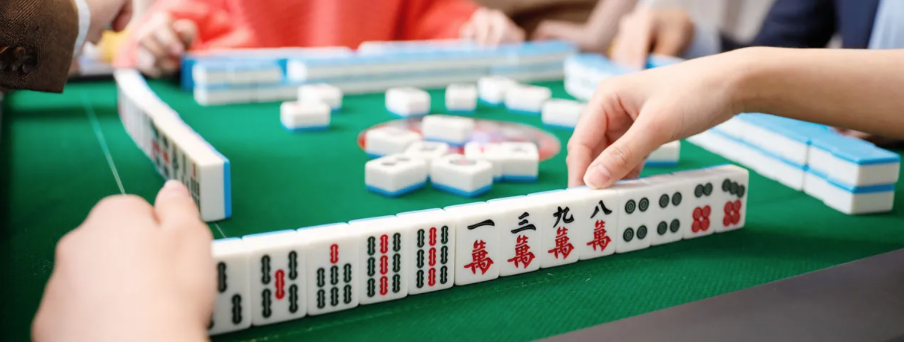
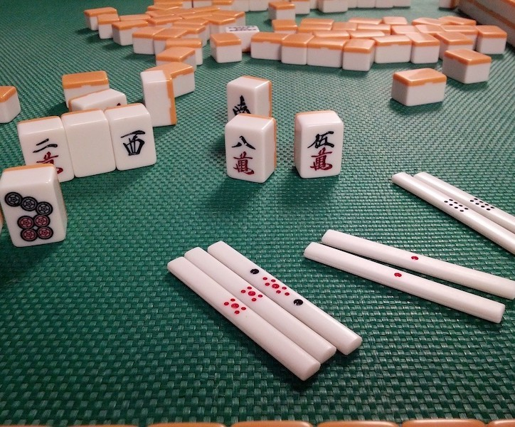
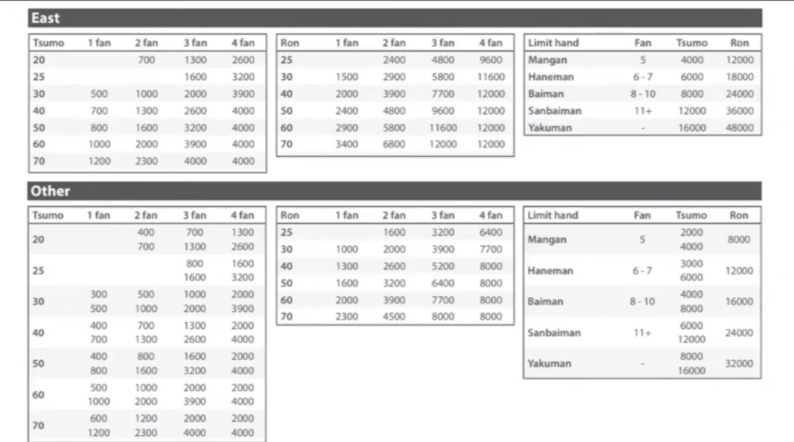
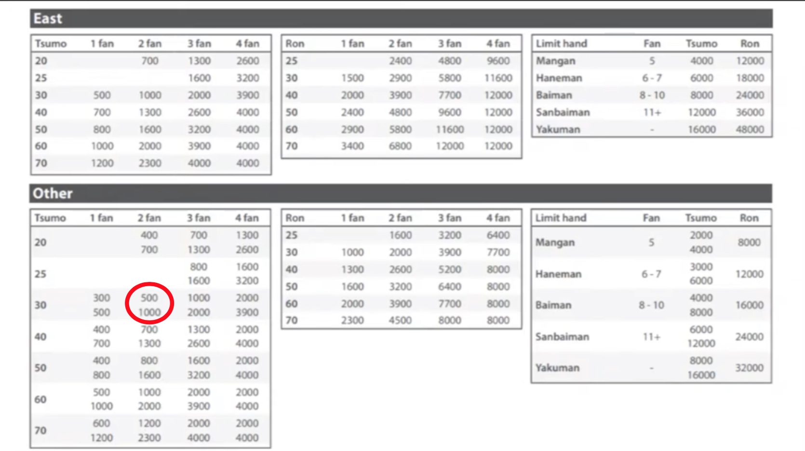

In this guide I will teach you how to calculate points in the game of Mahjong
Calculating depends on the type of win
Before learning how to calculate points its important to quickly note that, when winning a round, you either win by tsumo, which is by drawing your winning tile, or by ron which is by stealing your winning tile.
If you won by Tsumo then all the other players will share in paying you your winning points.
And if you win by Ron, then only the player who’s tile you stole has to pay you all your winning points
Now lets learn how to calculate!:
There is a formula used for calculating points, However when you are actually playing you won’t be doing any calculations, you will usually have a scoring sheet next to you which calculates for you and tells you how many points you get based on the amount of “han”
Before explaining how to read the table it’s important to note that There is another form of points, similar to “han” that is aquired called fu. Don’t be too overwhelmed as these extra fu only apply in a few situations which are easy to remember. But usually every winning method gives you a standard 20 fu when open or 30 fu when closed.
All you actually need to know, is how much fu and han you have then you just match those numbers in the scoring table and it will say how many points you get. Let’s look at a few examples in the scoring table first, then there will be a list of the few situations where you still receive extra fu below it.
There is an east section and other section - thats because whoever is sat in east always pays double or if east wins then everyone pays them double. Being east is a double edged sword
The tsumo section is for winning by drawing your winning tile, so the payment of points is from all players. Which is why there are 2 numbers because east pays double alone.
And ron means only the player stolen from pays the points, hence why there’s only one number
To Simplify this table just follow this rule - when theres 2 numbers east pays the higher one and rest pay the lower. When there’s one number, all players pay that amount each, in the tsumo section. Or if in the ron section the only player stolen from pays that whole amount
For example look at the (red circle). For when the winner is not east.
That’s 2 han with 30 fu (the fu is on the left). 500 is how many points that winning combo gets you, so everyone pays 500 but it also says 1000, because as we said earlier, east pays double. So 1500 points in total.
If we look at the same example but for ron its only one number because only the player the winner stole from will pay. And the first example is for tsumo, when you draw the winning tile, so everyone shares in paying points. And that’s why there are 2 numbers because east always pays double.
Just follow this rule and you will never go wrong:
2 numbers = east pays the higher one and rest pay the lower.
1 number (Tsumo section) - all players pay that amount each
1 number (Ron section ) only the player stolen from pays that whole amount
Now the section on right is for when you reach 4 han or more, which caps your points and is simple to undertsand.
For example anything between 5-7 han will give you a “haneman” which is 6000 points when your east or 3000 points when your not east (east will pay you double-6000, hence there are 2 numbers in the bottom haneman)
Now these are the few situations where you will receive extra fu. Fu is always rounded up to the nearest 10, so 32 fu will automatically become 40 fu
Winning
Extra 2 - win by tsumo
Waiting
1. Waiting to complete an edge sequence (123 or 789)
Waiting for 3 = 2 fu
Waiting for 7 = 2 fu
Others don’t count only 3 and 7
2. Middle tile of sequence (4 for a 3,4,5) = 2 fu
3. Waiting on pair tile
Dragon pair = 4 fu
Any other pair = 2 fu
Triplets and quads
1. Having a triplet of terminal or honour
Open = 4 fu
Closed = 8fu
2. Triplet of simples
Open = 2 fu
Closed 4 fu
3. Kan terminal or honor
Open = 16 fu
Closed 32 fu
Once you know how much fu you have and how much han you have you can simply have a look at the scoring table and match your numbers to find out how many points you will get. Now we will look at this table to better explain how to read it